KBase Analysis Notebook
A ipython notebook with bindings to kbase APIs and built in analysis and QC tools
ipython notebook server http://ipython.org/ipython-doc/rel-0.13/overview.html. This is a web based python shell interface with ability to use other shells (bash, perl, R). Allows execution of code blocks (called cells) and display of the results as plain text or images or markup (html / javascript).
Basic Usage
Launch Page
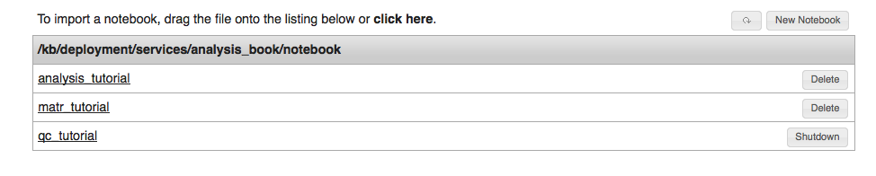
Here we have the login / launch page which lists all the users available notebooks. A notebook is a python data structure in plain text that saves all the history of commands and output that occurred in notebook session.The user can do the following:
Notebook Page
Composed of 2 parts.
1. A top control bar with buttons / drop-down menus
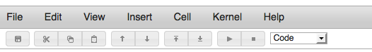
2. An interactive notebook space below, composed of ‘cells’.
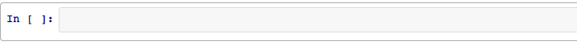
Notebook Usage
Work within the notebook is done by entering commands into a cell, this can be done with one or more lines. To execute the commands in the cell use shift-return. Cells are numbered by execution order and may be re-ran in any order. The results (if any) are displayed in the space below that cell.
Results may be:
Cell interpreters:
command cell interproter
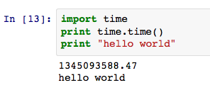
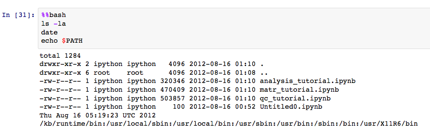

API Usage
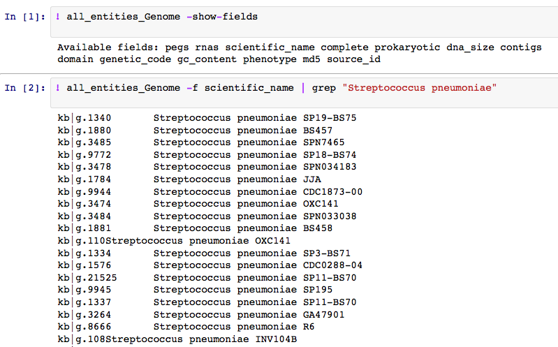
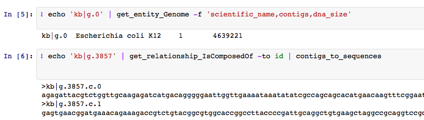
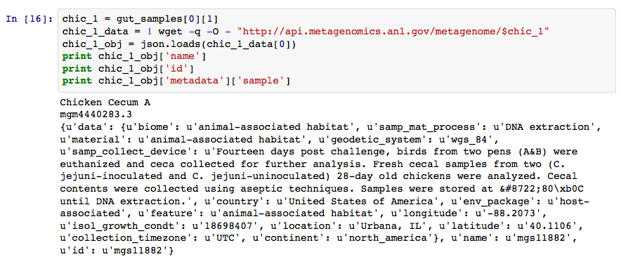
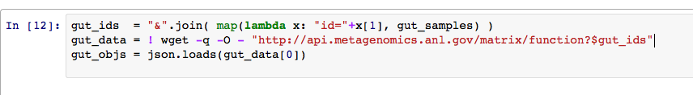
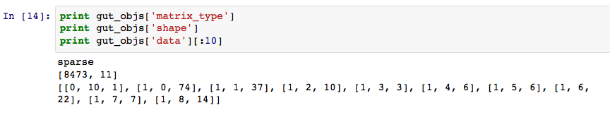
Analysis Usage
workflow:
examples:
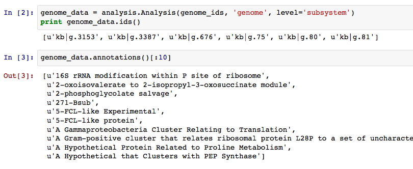
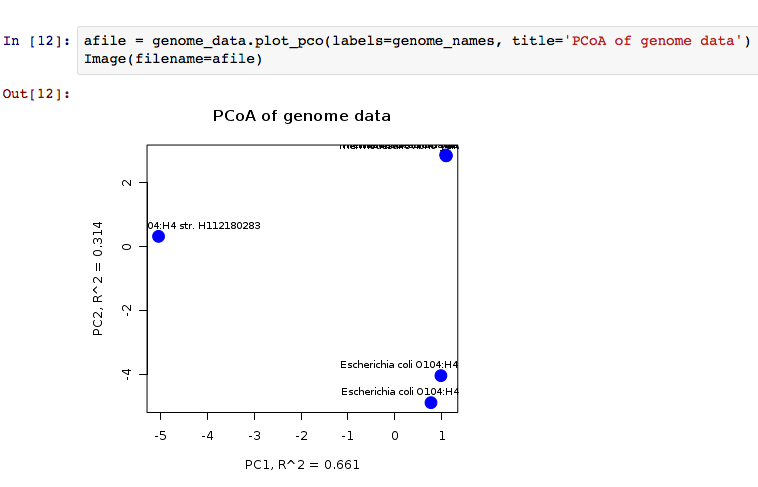
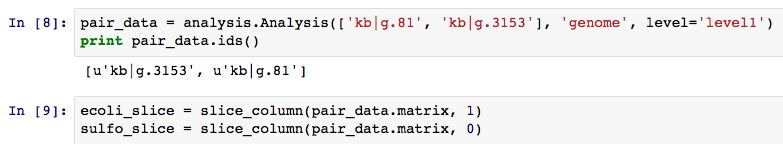
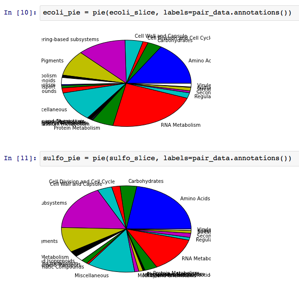
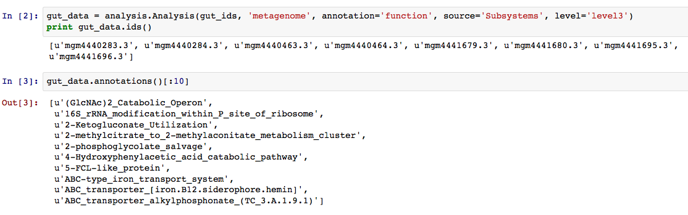
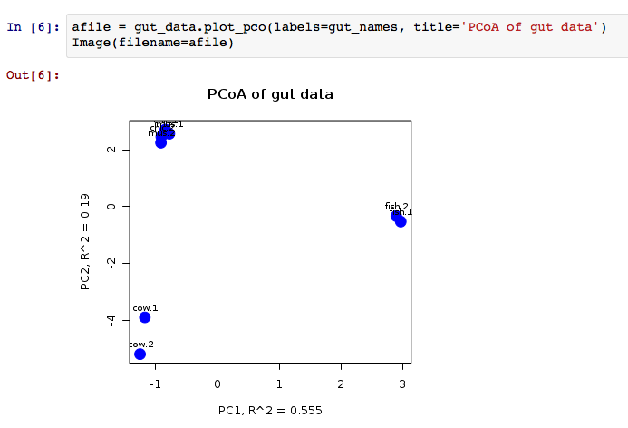
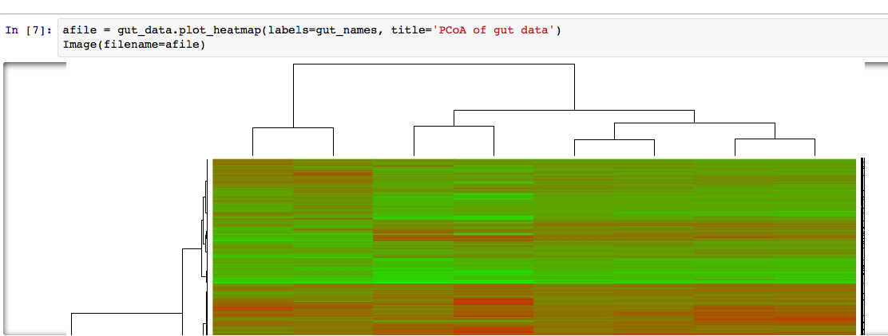
QC Usage
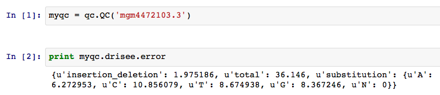
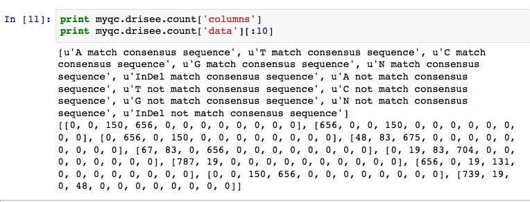
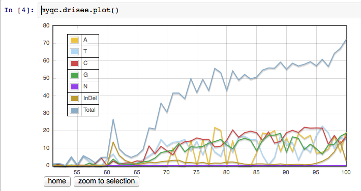
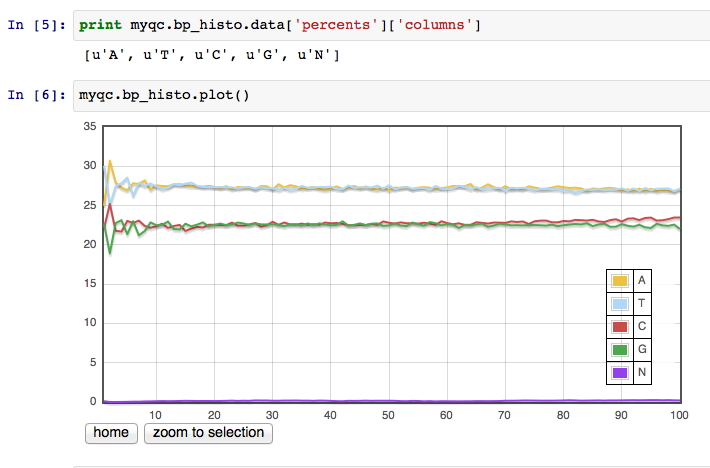
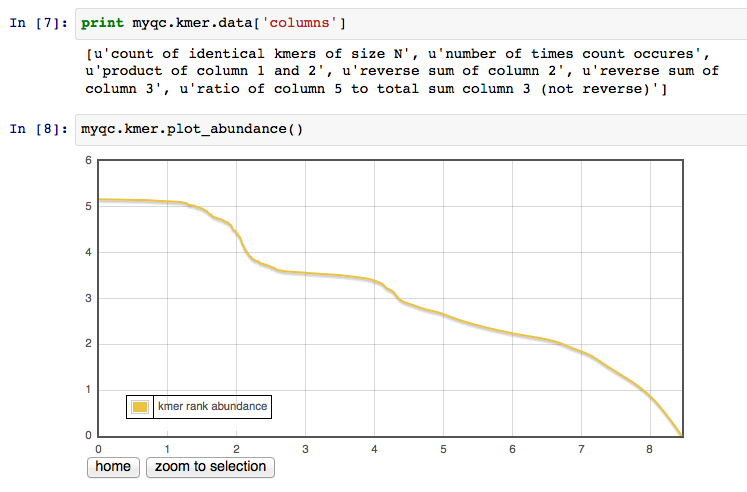
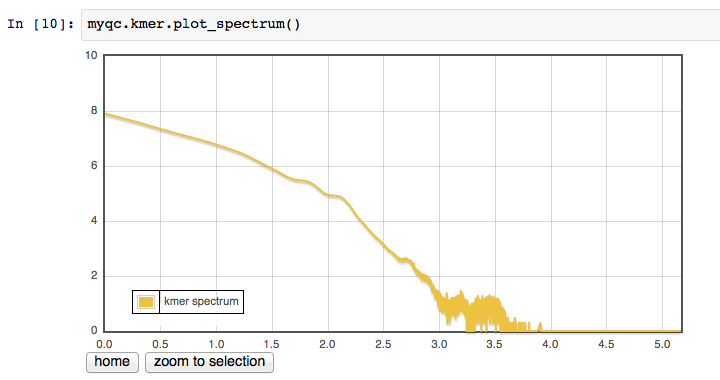